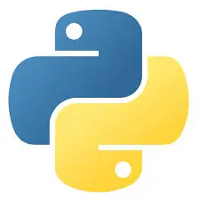
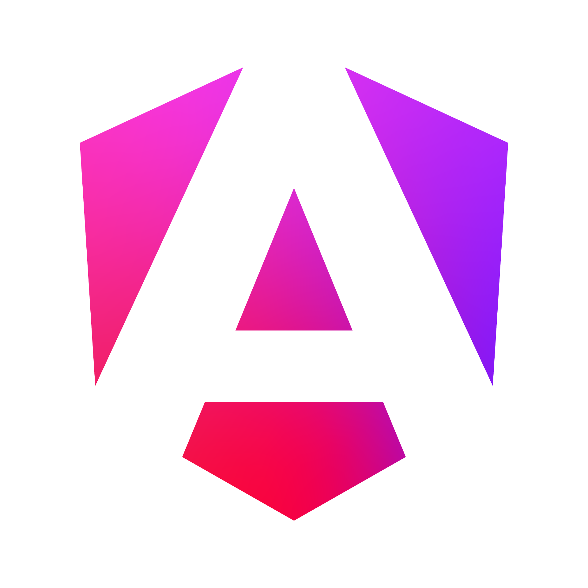
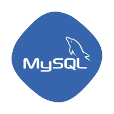

Desarrollo Web
Creamos sitios web y aplicaciones personalizadas que se adaptan a las necesidades de cada cliente. Tecnologías utilizadas: HTML5, CSS3, JavaScript, React y Node.js para construir experiencias rápidas, seguras y escalables. Bases de datos MySQL y MongoDB para garantizar un almacenamiento confiable de la información. Herramientas no-code/low-code que permiten a las PyMEs reducir tiempos de implementación y costos.



